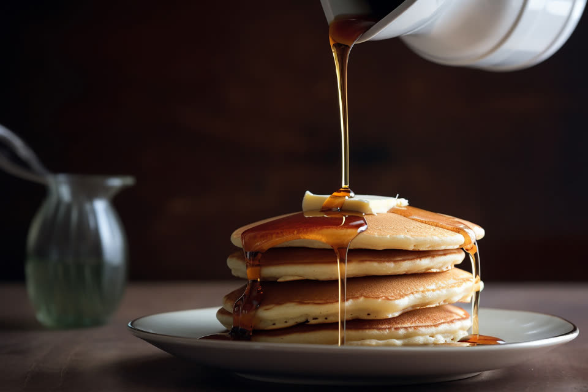
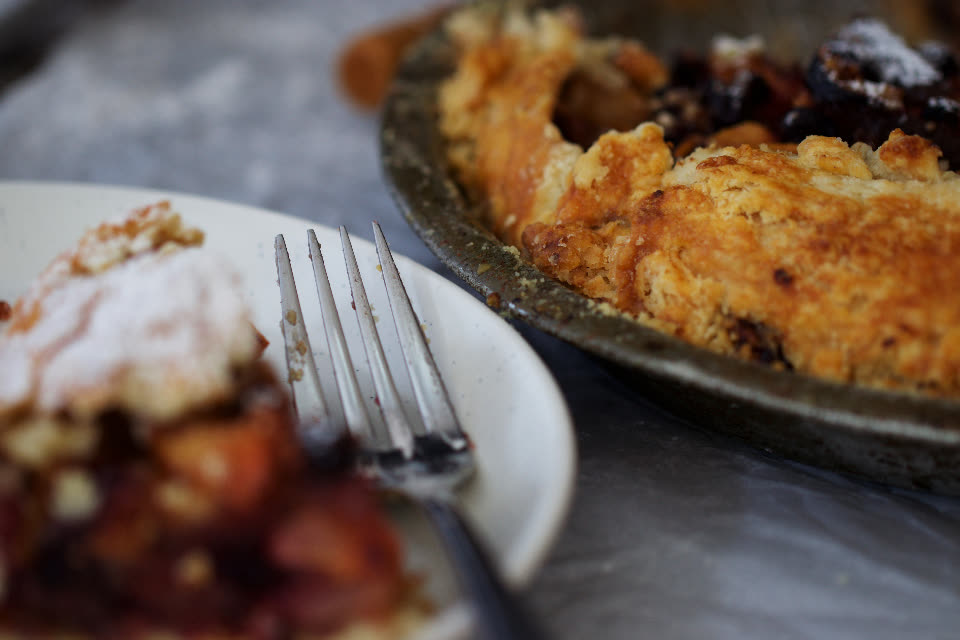

Example photoBreakfast, lunch and pie, Arroyo Grande
Mornings, slowly.
Pancakes off the griddle, a pot of coffee that never runs dry, and pie that's out of the oven by eleven. Stay as long as you like.

Example photoBreakfast, lunch and pie, Arroyo Grande
Pancakes off the griddle, a pot of coffee that never runs dry, and pie that's out of the oven by eleven. Stay as long as you like.
Tuesday to Sunday, the day runs the same comfortable way. Come early for a quiet table, or late for warm pie.

Example photoPie of the week
Our take on the Central Coast classic: berries from up the road, a little lemon, and an all-butter crust we roll by hand every morning.
“We ordered a whole key lime pie for my mom's birthday and it was perfect. The breakfast is just as good.”
★★★★★ a week ago Example
Fluffy pancakes, great hash browns and the coffee keeps coming. Our new Sunday spot.
Cozy little café with homemade everything. The soup of the day was excellent.